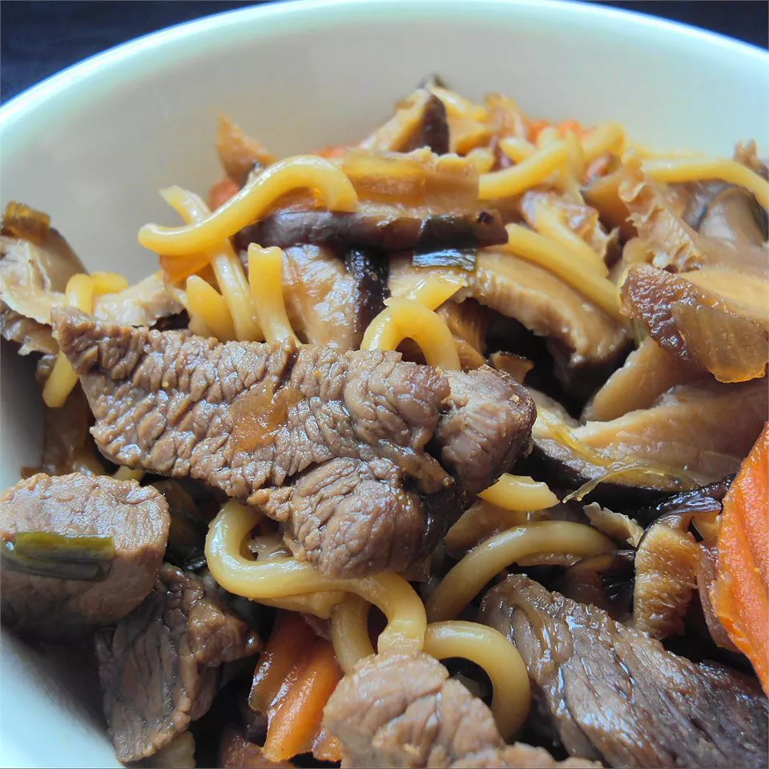

Beef Sukiyaki

Description
Vegetables, noodles, and beef are served in a steaming, flavorful broth made with dashi, mirin, and soy sauce in this Japanese dish, sukiyaki.
Ingredients:
- 1 ½ cups prepared dashi stock
- ¾ cup soy sauce
- ¾ cup mirin
- ¼ cup white sugar
- 8 ounces shirataki noodles
- 2 tablespoons canola oil
- 1 pound beef top sirloin, thinly sliced
- 1 onion, thinly sliced
- 1 tablespoon canola oil
- 2 stalks celery, thinly sliced
- 2 carrots, thinly sliced
- 5 green onions, cut into 2 inch pieces
- 4 ounces sliced fresh mushrooms (button, shiitake, or enoki)
- 1 (14 ounce) package firm tofu, cut into cubes
Steps:
- Combine dashi, soy sauce, mirin, and sugar in a bowl and set aside.
- Soak noodles in boiling water for 1 minute. Drain and rinse under cold water.
- Heat 2 tablespoons canola oil; cook and stir beef in the hot oil until no longer pink, 2 to 3 minutes. Drain and set aside.
- Heat 1 tablespoon canola oil in the skillet; cook and stir onion, celery, carrot, and mushrooms until softened, about 4 minutes. Stir in green onions, and dashi mixture, noodles, beef, and tofu. Bring to a simmer. Divide hot sukiyaki among four bowls and serve.